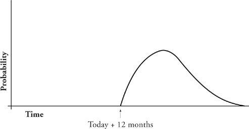
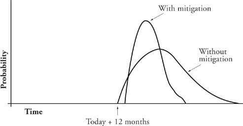
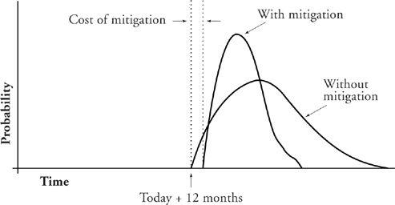

The Dirty Little Secret
Proceeding at breakneck speed is, by definition, inconsistent with risk management. Of course you already knew that. But its corollary may have eluded you. The corollary is that managing your risks requires that you go at some slower speed. And the result is that you will finish later than you would have if you had sustained breakneck speed and been lucky enough not to break your neck.
Let’s take an example. Suppose you undertake a project with only one significant risk. There is a bad thing that might happen, and depending on whether or not it happens and when and to what extent, it could cause delay on your project. If the bad thing doesn’t happen at all, you will finish in twelve months. If it does happen, it could result in putting off project completion by as much as a year. Your most likely scenario is that it will probably cost you a four-month delay.
Here is the risk diagram for the project as I have described it:

You put your risk management hat on and your first thought is this: What could I do to improve my handling of the bad thing if it does happen? You hit upon a short course to teach some of your key project people how to deal more efficiently with the matter. This is risk mitigation. You realized that the course could cost you a few person-months, but potentially save you a doubling of total cost and save more than half of your potential delay, so you go ahead and send your people to the course. The following diagram shows how your risk diagram changes with mitigation:

This is a considerable improvement. Your most likely date is moved in by a full six weeks. Your mean expected date (fifty-fifty chance) is moved in by even more. Your worst case is barely half the delay of what you would have had without mitigation. That’s the good news.
The bad news is that your most optimistic possibility has worsened. Your rosy scenario is a little less rosy. Without mitigation, you had a snowball-in-hell chance of finishing in twelve months plus a day; with mitigation, your absolute minimum time to finish is increased by the time spent training your workers. This is the cost of mitigation.

In at least half the companies I visit, people can’t focus on any date except the rosy-scenario date. For these companies, risk mitigation makes no sense at all. They can’t see beyond the time lost to mitigation. They’re planning for success, and risk management just gets in the way.
Mitigation is the jewel in the crown of risk management. If you can’t do mitigation (can’t take action now to make future risk-containing action possible or reduce its cost), you can’t do risk management.